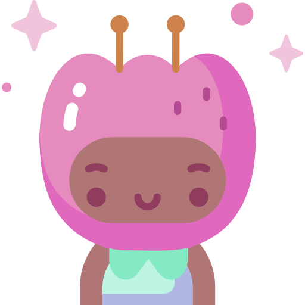
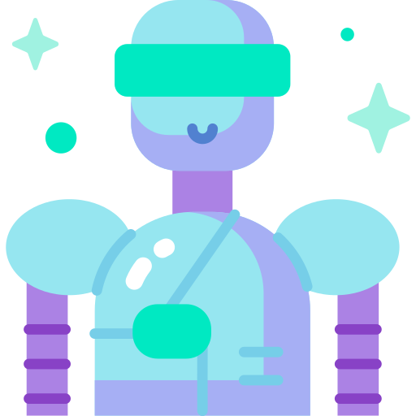
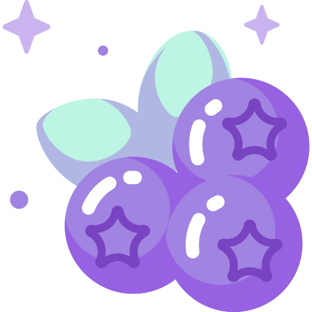

Moonlight
Aa
Accessible Fonts
✦
Setting Up GitHub
✦
your starmap for getting started with GitHub & VS Code
✨
⭐
💫
Definitions & Lingo
beginners start here!
IDE Set-up
Creating a Repository
Updating a Repository
Templates & Open Source
GitHub Pages
GitHub Desktop Set-up

GitHub Profile Set-up

Explore
VS Code Basics
Cloning

The Edit Cycle
Navigate Your Journey
Definitions & Lingo
GitHub Profile Set-up
GitHub Desktop Set-up
IDE Set-up (VS Code)
Creating a Repository
Updating a Repository
Templates & Open Source